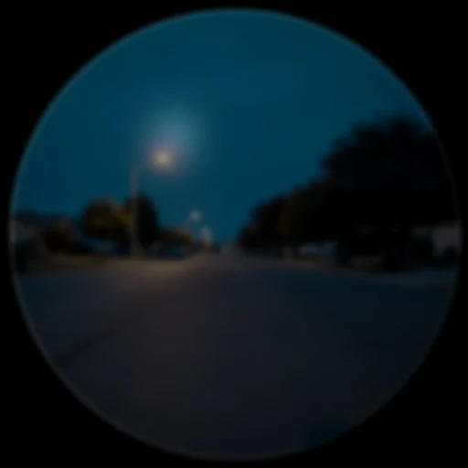
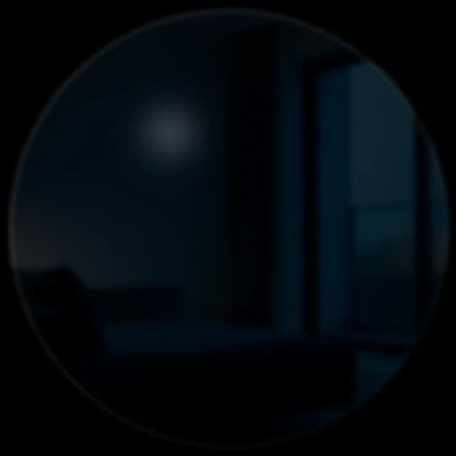
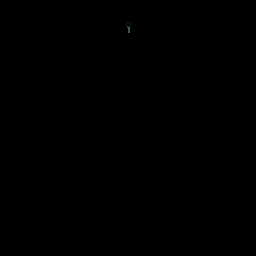
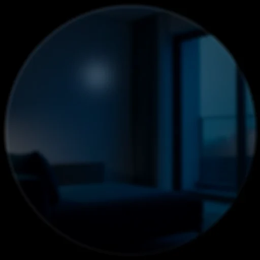
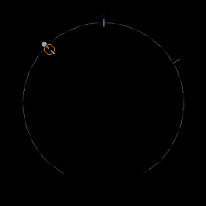
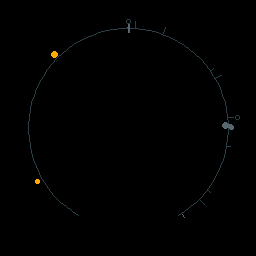

The glasses experience
The Halo display is a small round waveguide. DreamLayer's founding rendering decision — the Meridian thesis — is that this display is a place, not a stage: it is never blank, cards do not "pop up," and every pixel that moves carries information. This chapter walks the experience end to end; the card gallery and design language chapters go deeper on each piece.
The Horizon — the resting state
When nothing needs you, the glasses show the Horizon: a 72-segment ring that is your day, drawn as a track of light. Events, commitments, and echoes of the past sit at their angle of the day; a notch heartbeat breathes at now. The rim is not decoration — reading the ring is reading your calendar.
| The day, idle | The Veil down |
|---|---|
 |
 |
Both frames are rendered by the actual device Lua through the raster harness — these are the pixels the firmware produces.
When you put the glasses on (or the host sends wake), the day assembles
radially from the notch over 600 ms, and the idle aurora begins: a 12
second luma wave that flows light along the day's track using the palette
hardware, at zero additional draw cost.

Promises you have made live on the Horizon too, as an arc ladder; a broken one shatters — once, at the transition, never again on replay.
| The promise ladder | A shattered promise |
|---|---|
 |

How a card arrives — focus physics
Cards do not appear; they condense. Each card type has a home angle on the
Horizon (recall cards are stamped with an origin_deg derived from the
memory's timestamp), and the card flies inward from that point on the rim: an
anticipation pull-back past the rim, squash-and-stretch on the flight head
(never on text), a phosphor tail cooling behind it, and a spring "click" on
the landing ring. When dismissed, the card recedes home — the light files
itself back into the day.

| Condensing | Holding (confidence ring) | Receding |
|---|---|---|
The hold ring's color is the answer's confidence; a one-shot glint runs the confidence arc as it settles, and the settled frame is a static gauge — no idle spectacle.
Priorities and the queue
The device state machine (halo-lua/app/state_machine.lua, queue in
main.lua) classes every card:
- URGENT — hark, privacy, errors: preempts what is showing.
- CONTEXT — recalls, dossiers, fact-checks, captions: queued politely.
- AMBIENT — palette shifts, dream weather: never interrupts.
A crossfade between an outgoing and incoming card is bounded by the material
rules (panes draw only at exit_t == 0), so the worst composited frame stays
inside the measured draw budget of 420 calls.
Input — buttons and head gestures
The Halo has a button and an IMU. The state machine maps the button by context: from ready, single click opens listening (ask), long press slams the Privacy Veil; on a showing card, single or double click dismisses; from the veil, long press resumes. Double tap enters and leaves Dream Mode.
The IMU gesture classifier (halo-lua/app/imu_gesture.lua) recognizes five
head gestures from accelerometer peaks, each with a confidence and a shared
900 ms cooldown:
| Gesture | Motion | Confidence | Meaning |
|---|---|---|---|
NOD_SAVE |
one down-up nod | 0.90 | save this moment |
DOUBLE_NOD |
two nods | 0.92 | strong confirm |
SHAKE_DISMISS |
three alternating shakes | 0.88 | dismiss / no |
GLANCE_PEEK |
quick upward glance (under 350 ms) | 0.82 | peek |
TILT_REVEAL |
held tilt (over 400 ms) | 0.85 | reveal more |
Seam: on real hardware these classify live frame.imu_data(); in the
repo they are exercised by tests feeding synthetic accelerometer traces.
Sound and touch
Every significant moment has a matched earcon and haptic, chosen host-side and carried on the card payload: Juno's recorded "Hey" (or "Hello") when she starts listening, her spoken "Listen!" and "Watch out!" harks, the look cue when a dossier surfaces, the neutral chime on a verified claim — each cue a small family of takes, rotated so you never hear the same clip twice in a row. Answer-ahead is deliberately silent — its whole point is not to interrupt. The full map, including the audio files that ship in the phone app, is in Earcons and haptics. Seam: the speaker/actuator that plays them; the device Lua draws matching visual "acoustics" (chime ring, chord arpeggio, pre-slam rumble) today.
Dream Mode
Double-tap and the display steps through a door: a starfield streaks outward,
and the glasses stop being an assistant and become an instrument. Dream Mode
renders through its own path (halo-lua/display/dream_renderer.lua): the
Ghost Layer surfaces WorldAnchorCards — pale "MEMORY ECHO" text pinned to
places, drawn at 20 percent opacity with a per-character Perlin ghost-wake —
and Synesthesia turns what the camera and microphone sense into a
six-word poetic phrase with a gestural three-shape sprite. Inner Weather tints
the whole sky with your own climate. Double-tap again and the starfield pulls
you home. See the wider lens set for the
full Dream, REM, and Yesterlight story.
What the glasses never do
The firmware contains no audio recording path, no face database, and no network stack of its own — it can only reach the world through the paired phone. Text never moves or distorts (a standing Meridian rule), privacy-class cards render with no translucent pane and enter with a hard slam rather than a pretty fade, and when the Privacy Veil lands, parallax freezes to zero on that exact frame: nothing about the veil is allowed to feel ambient.